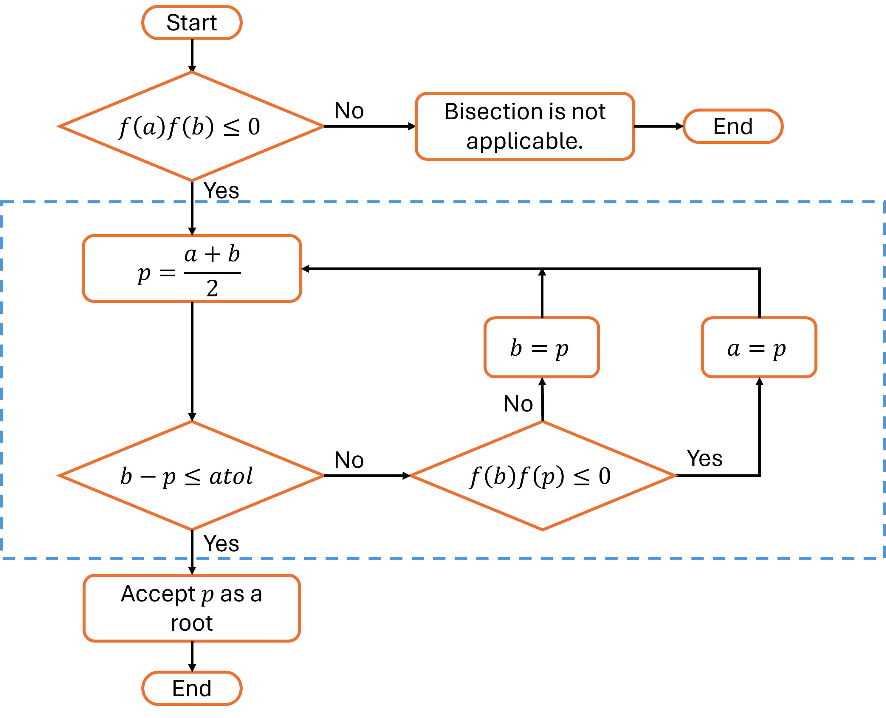

Theorem 2.2.1. Intermediate Value Theorem.
If \(f\in C[a,b]\) and \(K\) is any number between \(f(a)\) and \(f(b)\text{,}\) then there exists \(c\in(a,b)\) with \(f(c)=K\text{.}\)
Video placeholder — PANOPTO_ID required.
Replace the sentinel ID with the assigned Panopto video before publishing.
Video placeholder — PANOPTO_ID required.
Replace the sentinel ID with the assigned Panopto video before publishing.
Video placeholder — PANOPTO_ID required.
Replace the sentinel ID with the assigned Panopto video before publishing.
Video placeholder — PANOPTO_ID required.
Replace the sentinel ID with the assigned Panopto video before publishing.
Video placeholder — PANOPTO_ID required.
Replace the sentinel ID with the assigned Panopto video before publishing.

def bisection(f, a, b, atol, max_iter):
root_found = False
if f(a)*f(b) \le 0:
for i in range(max_iter):
p = (a+b)/2
if b-p \le atol:
root_found = True
return p
elif f(b)*f(p) \le 0:
a = p
else:
b = p
if not root_found:
raise Exception(
"Bisection did not converge "
f"within {max_iter} iterations. "
"Try a greater max_iter."
)
else:
raise Exception(
"Bisection is not applicable for this problem."
)
max_iter = 20, as we expect the method to converge to a root within 20 iterations.
p = bisection(
f=lambda x: x*x*x + 2*x*x + 5*x - 2,
a=0,
b=2,
atol=1e-3,
max_iter=20,
)
print(f"The root found by bisection method is {p}.")
The code will be given in Canvas.The root found by bisection method is 0.3447265625.